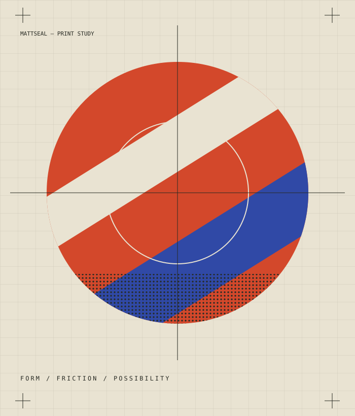

rectangles.fm
A reference for the analog-inspired graphic sensibility and human personality I want to explore here.

I'm Matt, a product designer interested in design, technology, culture, and the creative process. This is where I follow the interesting bits.
Personal commentary is provisional copy for review. The studio is taking shape.
On the workbenchA personal creative studio, built through an exploration of AI-assisted development. The site itself is the current experiment.
Provisional commentary / For reviewAs AI makes building easier, design judgment about what deserves to exist becomes more important.
The ability to make something is only part of the work. Choosing what is worth making deserves just as much attention.
Provisional commentary / For reviewThis is where genuine sketches, iterations, and development notes will go as they are selected and documented.
No process artifacts or videos added yet.
Two starting points for exploring how nostalgic visual influences can become digital experiences.
Provisional commentary / For review
A reference for the analog-inspired graphic sensibility and human personality I want to explore here.
A reference for analog-inspired digital creativity. The studio can take inspiration from that character while finding its own way to explore.
Matthew Kearney. Product designer, curious human.
This is my space to try things and think out loud.